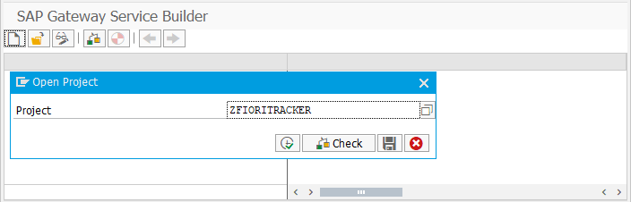
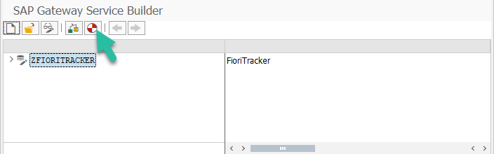
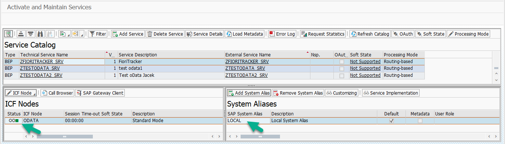
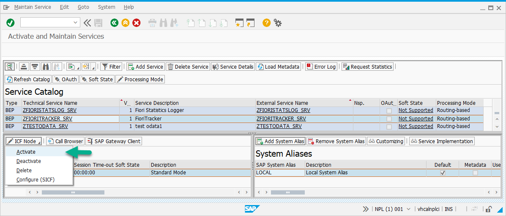

Step 3 - Enable oData service
To enable oData service complete the sub-steps described below.
?> When description refers to Service name, you need to put the service’s name of the run application. If you don't know the Service name please refer to the technical section of each product.
1. Generate Runtime objects in transaction SEGW
1.1. Start SAP Gui transaction SEGW
1.2. Using the menu Project > Open - Open project named as the first part of the Service name. Fe. if Service name is ZFIORITRACKER_SVR please open project called ZFIORITRACKER.

1.3. Go to Change mode and choose function Generate (you will be prompted for transport and your user must be registered as developer)

2. Add the Service to Service Catalog
2.1 Start SAP Gui transaction /n/IWFND/MAINT_SERVICE
2.2 Find entry with Service name
If the entry is present then move to sub-step 3 (Add system alias to ICF node), in not, please execute the following steps:
2.3 Click on the Add service button.
2.4 Provide System Alias: LOCAL and External Service Name as the Service name.
2.5 Select the record with Service name and click on the Add selected services button.
3. Add system alias to ICF node
3.1 In /n/IWFND/MAINT_SERVICE, chose Service name

3.2 If ICF node is green and alias is present then the procedure is completed, if not, please execute the following steps:
3.3 Choose Add system alias, New entry and type Service name_0001 (f.e. ZFIORITRACKER_SRV_0001) in Service Doc. Identifier and "LOCAL" in SAP System Alias mark *Default System check-mark.
3.4 Click on ICF node button and from drop down chose Activate
